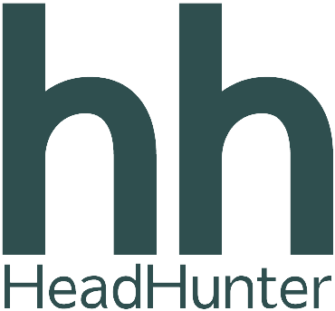
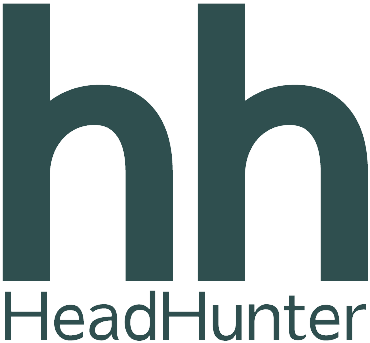

Контактные данные: Телефон : +7(900)-286-58-45
Почта : alexey.mullko21@gmail.com
—
—
Резюме Инженер по тестированию
11.08.1996 - 27 лет.
Гражданство - Россия / Место жительства - Сочи
Контактные данные:
Телефон : +7(900)-286-58-45
Почта : alexey.mullko21@gmail.com
 —
—
—
—
Бакалавр 2021г.:
ЛНУ им. В. Даля
Бизнес-информатика, "Информационная бизнес-аналитика"
• Алекс Смитт "Тестирование с нуля до специалиста".
• QA Studio "Ручное тестирование".
• Алексей Маршал "Тестирование ПО".
• Постоянно развиваю и осваиваю новые технологии, повышая этим свою профессиональную компетентность.
Коммерческий опыт:
1С БИЗНЕС РЕШЕНИЯ - Ноябрь 2023 — Апрель 2024
Должность - Инженер по тестированию
Обязанности на проекте:
— Активное участие в полном цикла разработки проекта(Scrum/Kanban).
— Разработка тестовых сценариев и планов тестирования.
— Проведение функционального тестирования, интеграционного, регрессионного, исследовательского, UI/UX, совместимости, локализации.
— Проверка соответствия продукции техническим требованиям.
— Анализ причин возникновения дефектов и разработка мер по их устранению.
— Анализ результатов тестирования и подготовка отчетов о найденных дефектах.
— Взаимодействие с разработчиками для исправления ошибок.
— Участие в улучшении процессов разработки и тестирования.
— Мониторинг и анализ производительности системы.
— Поддержание актуальных знаний о технологиях и методологиях тестирования.
Инструменты на проекте:
• Figma Design • Jira/Confluence • DevTools • Charles • Postman • Swagger •
Hard Skills:
— Знание SDLS (Iterative, Agile: Scrum/Kanban, Waterfall).
— Опыт работы с требованиями к ПО.
— Понимание принципов и методик тестирования (black box, white box, grey box).
— Знание Клиент-серверной архитектуры.
— Знание видов тестирования и техник тест-дизайна.
— HTML / CSS.
— Jira / Confluence.
— Figma Design.
— Опыт проведения функционального, регрессионного, интеграционного, нагрузочного, исследовательского, ad-hoc
тестирования.
— Ведение тестовой документации (тест-план, тест-кейс, чек-лист, баг-репорт, отчет о тестировании).
— SQL: SqLite, MySQL (Базовый уровень).
— Опыт работы со снифферами трафика (Fiddler, Charles).
— REST / API(Postman,Swagger) / Json / Ajax / Ws / XML.
— Работа с системой контроля версии (Git).
— Работа с логами (Kibana, Sentry).
— Понимание основных принципов работы сетевых протоколов (TCP/IP, HTTP).
— Знание английского языка на уровне чтения технической документации.
Soft Skills:
— Коммуникабельность
— Аналитический склад ума.
— Внимательность к деталям.
— Ответственность.
— Умение работать в команде.
— Высокая обучаемость.